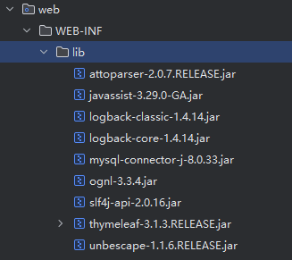
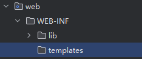
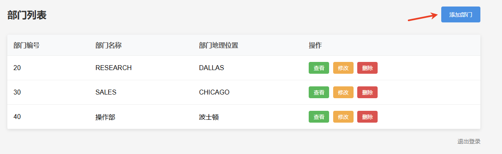
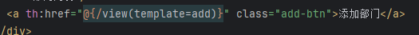
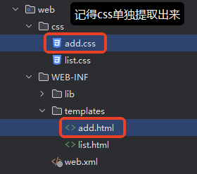
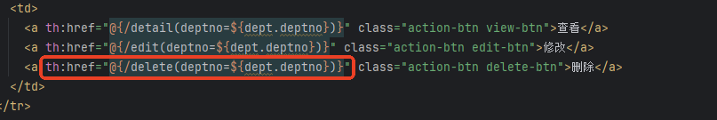

Servlet + Thymeleaf 改造之前的部门管理系统。
Servlet 负责核心业务的处理，将处理完成的数据收集起来。交给 Thymeleaf 来负责数据的展示。各司其职，分工协作。

然后将 thymeleaf jar放到 classpath中。
这里将 logback的 jar 包一并引进来了。
package com.jkweilai.dept.listeners;
import jakarta.servlet.ServletContext;
import jakarta.servlet.ServletContextEvent;
import jakarta.servlet.ServletContextListener;
import jakarta.servlet.annotation.WebListener;
import org.thymeleaf.TemplateEngine;
import org.thymeleaf.templatemode.TemplateMode;
import org.thymeleaf.templateresolver.WebApplicationTemplateResolver;
import org.thymeleaf.web.servlet.JakartaServletWebApplication;
@WebListener
public class ThymeleafInitializer implements ServletContextListener {
@Override
public void contextInitialized(ServletContextEvent sce) {
// 获取ServletContext对象
ServletContext application = sce.getServletContext();
// 创建Thymeleaf与Servlet容器的桥梁对象
JakartaServletWebApplication jakartaServletWebApplication = JakartaServletWebApplication.buildApplication(application);
// 创建模板解析器并关联到Servlet环境
WebApplicationTemplateResolver templateResolver = new WebApplicationTemplateResolver(jakartaServletWebApplication);
// 设置模板文件存放的基础路径
templateResolver.setPrefix("/WEB-INF/templates/");
// 设置模板文件的后缀名
templateResolver.setSuffix(".html");
// 指定模板处理模式为HTML格式
templateResolver.setTemplateMode(TemplateMode.HTML);
// 禁用模板缓存（开发环境建议关闭）
templateResolver.setCacheable(false);
// 创建模板引擎
TemplateEngine templateEngine = new TemplateEngine();
// 模板引擎关联模板解析器
templateEngine.setTemplateResolver(templateResolver);
// 将Thymeleaf与Servlet容器的桥梁对象存储到应用域中
application.setAttribute("jakartaServletWebApplication", jakartaServletWebApplication);
// 将模板引擎对象存储到应用域中
application.setAttribute("templateEngine", templateEngine);
}
}
templates目录
类的根路径下新建 logback.xml文件，提供以下配置：
<configuration>
<!-- 只输出 ERROR 级别及以上的日志 -->
<logger name="org.thymeleaf" level="ERROR"/>
<!-- 关闭 Thymeleaf 初始化 DEBUG 日志 -->
<logger name="org.thymeleaf.TemplateEngine" level="INFO"/>
<!-- 控制台输出格式简化 -->
<appender name="CONSOLE" class="ch.qos.logback.core.ConsoleAppender">
<encoder>
<pattern>%d{HH:mm:ss} [%thread] %-5level - %msg%n</pattern>
</encoder>
</appender>
<!-- 全局日志级别设为 WARN -->
<root level="WARN">
<appender-ref ref="CONSOLE"/>
</root>
</configuration>
提供一个字符编码过滤器，过滤所有的请求，解决请求体的中文乱码问题以及响应的中文乱码问题。
package com.jkweilai.dept.filters;
import jakarta.servlet.*;
import jakarta.servlet.annotation.WebFilter;
import java.io.IOException;
@WebFilter("/*")
public class CharacterEncodingFilter implements Filter {
@Override
public void doFilter(ServletRequest request, ServletResponse response, FilterChain filterChain) throws IOException, ServletException {
request.setCharacterEncoding("UTF-8");
response.setCharacterEncoding("UTF-8");
filterChain.doFilter(request, response);
}
}
Servlet 处理完业务之后，交给 Thymleaf 来处理页面，都要编写以下的代码：
ServletContext application = getServletContext();
// 从上下文中获取Thymeleaf的Servlet适配器实例
JakartaServletWebApplication jakartaServletWebApplication = (JakartaServletWebApplication)application.getAttribute("jakartaServletWebApplication");
// 从上下文中获取Thymeleaf模板引擎实例
TemplateEngine templateEngine = (TemplateEngine) application.getAttribute("templateEngine");
// 创建Thymeleaf上下文对象，包装当前请求/响应和语言环境
WebContext webContext = new WebContext(jakartaServletWebApplication.buildExchange(request, response), request.getLocale());
// 使用模板引擎渲染名为"hello"的模板，结果写入响应输出流
templateEngine.process("hello", webContext, response.getWriter());
我们最好将以上的代码封装到一个 Servlet 当中，例如 ThymeleafViewServlet，这样代码可以得到复用：
package com.jkweilai.dept.servlets;
import jakarta.servlet.ServletContext;
import jakarta.servlet.ServletException;
import jakarta.servlet.annotation.WebServlet;
import jakarta.servlet.http.HttpServlet;
import jakarta.servlet.http.HttpServletRequest;
import jakarta.servlet.http.HttpServletResponse;
import org.thymeleaf.TemplateEngine;
import org.thymeleaf.context.WebContext;
import org.thymeleaf.web.servlet.JakartaServletWebApplication;
import java.io.IOException;
@WebServlet("/view")
public class ThymeleafViewServlet extends HttpServlet {
@Override
protected void service(HttpServletRequest request, HttpServletResponse response) throws ServletException, IOException {
ServletContext application = getServletContext();
// 从上下文中获取Thymeleaf的Servlet适配器实例
JakartaServletWebApplication jakartaServletWebApplication = (JakartaServletWebApplication) application.getAttribute("jakartaServletWebApplication");
// 从上下文中获取Thymeleaf模板引擎实例
TemplateEngine templateEngine = (TemplateEngine) application.getAttribute("templateEngine");
// 创建Thymeleaf上下文对象，包装当前请求/响应和语言环境
WebContext webContext = new WebContext(jakartaServletWebApplication.buildExchange(request, response), request.getLocale());
// 获取模板名称
String template = (String) request.getAttribute("template"); // 先从request域中获取模板名称
if (template == null) {
template = request.getParameter("template"); // 如果request域中没有，再从请求参数上获取模板名称
}
// 使用模板引擎渲染模板，结果写入响应输出流
templateEngine.process(template, webContext, response.getWriter());
}
}
当以后需要让 Thymeleaf进行页面渲染时，可以编写以下代码：
// 向请求域中绑定模板名称
request.setAttribute("template", "list");
// 转发到 ThymeleafViewServlet 做页面渲染
request.getRequestDispatcher("/view").forward(request, response);
如果不能使用转发，必须使用重定向时，也可以通过请求参数来传递模板名称，例如：
response.sendRedirect(request.getContextPath() + "/view?template=list");
封装 Dept类：
package com.jkweilai.dept.model;
public class Dept {
private Integer deptno;
private String dname;
private String loc;
// constructor
// setter and getter
// toString
}
DeptListServlet负责数据的收集：
package com.jkweilai.dept.servlets;
import com.jkweilai.dept.model.Dept;
import com.jkweilai.dept.utils.DbUtils;
import jakarta.servlet.ServletException;
import jakarta.servlet.annotation.WebServlet;
import jakarta.servlet.http.HttpServlet;
import jakarta.servlet.http.HttpServletRequest;
import jakarta.servlet.http.HttpServletResponse;
import java.io.IOException;
import java.sql.Connection;
import java.sql.PreparedStatement;
import java.sql.ResultSet;
import java.util.ArrayList;
import java.util.List;
@WebServlet("/list")
public class DeptListServlet extends HttpServlet {
@Override
protected void doGet(HttpServletRequest request, HttpServletResponse response) throws ServletException, IOException {
List<Dept> deptList = new ArrayList<>();
// 连接数据库
Connection conn = null;
PreparedStatement pst = null;
ResultSet rs = null;
try {
conn = DbUtils.getConnection();
String sql = "select deptno,dname,loc from dept";
pst = conn.prepareStatement(sql);
rs = pst.executeQuery();
while(rs.next()){
String deptno = rs.getString("deptno");
String dname = rs.getString("dname");
String loc = rs.getString("loc");
// 封装对象
Dept dept = new Dept(Integer.valueOf(deptno),dname,loc);
// 存储到List集合
deptList.add(dept);
}
} catch (Exception e) {
e.printStackTrace();
} finally {
DbUtils.close(conn, pst, rs);
}
// 将list集合存储到request域
request.setAttribute("depts", deptList);
// 将模板名字存储到request域中
request.setAttribute("template", "list");
// 转发给Thymeleaf做页面渲染
request.getRequestDispatcher("/view").forward(request, response);
}
}
Thymeleaf 的模板页面**WEB-INF/templates/list.html**来负责数据展示：
<!DOCTYPE html>
<html lang="zh-CN" xmlns:th="http://www.thymeleaf.org">
<head>
<meta charset="UTF-8">
<meta name="viewport" content="width=device-width, initial-scale=1.0">
<title>部门管理系统 - 部门列表</title>
<link rel="stylesheet" th:href="@{/css/list.css}">
</head>
<body>
<div class="container">
<div class="header">
<h1>部门列表</h1>
<a href="" class="add-btn">添加部门</a>
</div>
<table class="department-table">
<thead>
<tr>
<th>部门编号</th>
<th>部门名称</th>
<th>部门地理位置</th>
<th>操作</th>
</tr>
</thead>
<tbody>
<tr th:each="dept : ${depts}">
<td th:text="${dept.deptno}"></td>
<td th:text="${dept.dname}"></td>
<td th:text="${dept.loc}"></td>
<td>
<a th:href="@{/detail(deptno=${dept.deptno})}" class="action-btn view-btn">查看</a>
<a th:href="@{/edit(deptno=${dept.deptno})}" class="action-btn edit-btn">修改</a>
<a th:href="@{/delete(deptno=${dept.deptno})}" class="action-btn delete-btn">删除</a>
</td>
</tr>
</tbody>
</table>
<div class="logout">
<a href="">退出登录</a>
</div>
</div>
</body>
</html>
注意：
css/list.css文件中了，因此以上代码添加链接外部 css 样式文件。*css 文件不能放到****WEB-INF****目录下*。
在 list.html页面中找到上图的添加部门按钮。将请求路径修改为 th:href="@{/view(template=add)}"

该请求路径通过执行 ThymeleafViewServlet 来跳转到 WEB-INF/templates/add.html页面，因为 add.html页面中也需要使用 thymleaf 语法动态设置请求路径，因此需要将之前的 add.html移动到 WEB-INF/templates目录下：

添加部门页面 add.html代码如下：（记得把 css 单独提取出来）
<!DOCTYPE html>
<html lang="zh-CN" xmlns:th="http://www.thymeleaf.org">
<head>
<meta charset="UTF-8">
<meta name="viewport" content="width=device-width, initial-scale=1.0">
<title>部门管理系统 - 添加部门</title>
<link th:href="@{/css/add.css}" rel="stylesheet">
</head>
<body>
<div class="container">
<div class="header">
<h1>添加新部门</h1>
<a th:href="@{/list}" class="back-btn">返回列表</a>
</div>
<form th:action="@{/save}" method="post">
<div class="form-group">
<label for="deptName">部门名称</label>
<input type="text" id="deptName" name="dname" placeholder="请输入部门名称" required>
</div>
<div class="form-group">
<label for="location">部门地理位置</label>
<input type="text" id="location" name="loc" placeholder="请输入部门地理位置" required>
</div>
<div class="footer">
<button type="submit" class="submit-btn">保存</button>
</div>
</form>
</div>
</body>
</html>
注意：表单 form 的 th:action属性，设置表单提交的请求路径。
修改 DeptSaveServlet：
package com.jkweilai.dept.servlets;
import com.jkweilai.dept.utils.DbUtils;
import jakarta.servlet.ServletException;
import jakarta.servlet.annotation.WebServlet;
import jakarta.servlet.http.HttpServlet;
import jakarta.servlet.http.HttpServletRequest;
import jakarta.servlet.http.HttpServletResponse;
import java.io.IOException;
import java.sql.Connection;
import java.sql.PreparedStatement;
import java.sql.ResultSet;
@WebServlet("/save")
public class DeptSaveServlet extends HttpServlet {
@Override
protected void doPost(HttpServletRequest request, HttpServletResponse response) throws ServletException, IOException {
// 获取部门信息
String dname = request.getParameter("dname");
String loc = request.getParameter("loc");
// 连接数据库保存数据
// 查询当前最大的部门编号，新部门编号在当前最大部门编号基础上 + 1
Connection conn = null;
PreparedStatement ps = null;
PreparedStatement ps1 = null;
ResultSet rs = null;
try {
conn = DbUtils.getConnection();
String sql = "select max(deptno) as maxDeptno from dept";
ps = conn.prepareStatement(sql);
rs = ps.executeQuery();
if (rs.next()) {
int maxDeptno = rs.getInt("maxDeptno");
synchronized (this){
int deptno = maxDeptno + 1;
String insertSql = "insert into dept values(?,?,?)";
ps1 = conn.prepareStatement(insertSql);
ps1.setInt(1, deptno);
ps1.setString(2, dname);
ps1.setString(3, loc);
ps1.executeUpdate();
}
}
} catch (Exception e) {
e.printStackTrace();
} finally {
DbUtils.close(null, ps1, null);
DbUtils.close(conn, ps, rs);
}
response.sendRedirect(request.getContextPath() + "/list");
}
}
修改 DeptDetailServlet程序：
package com.jkweilai.dept.servlets;
import com.jkweilai.dept.model.Dept;
import com.jkweilai.dept.utils.DbUtils;
import jakarta.servlet.ServletException;
import jakarta.servlet.annotation.WebServlet;
import jakarta.servlet.http.HttpServlet;
import jakarta.servlet.http.HttpServletRequest;
import jakarta.servlet.http.HttpServletResponse;
import java.io.IOException;
import java.sql.Connection;
import java.sql.PreparedStatement;
import java.sql.ResultSet;
@WebServlet("/detail")
public class DeptDetailServlet extends HttpServlet {
@Override
protected void doGet(HttpServletRequest request, HttpServletResponse response) throws ServletException, IOException {
String deptno = request.getParameter("deptno");
Connection conn = null;
PreparedStatement ps = null;
ResultSet rs = null;
Dept dept = null;
try {
conn = DbUtils.getConnection();
String sql = "select * from dept where deptno = ?";
ps = conn.prepareStatement(sql);
ps.setString(1, deptno);
rs = ps.executeQuery();
if(rs.next()) {
String dname = rs.getString("dname");
String loc = rs.getString("loc");
dept = new Dept(Integer.parseInt(deptno), dname, loc);
}
} catch (Exception e) {
e.printStackTrace();
} finally {
DbUtils.close(conn, ps, rs);
}
// 将dept存储到request域
request.setAttribute("dept", dept);
// 将模板名字存储到request域
request.setAttribute("template", "detail");
// 转发给Thymeleaf
request.getRequestDispatcher("/view").forward(request, response);
}
}
编写 WEB-INF/templates/detail.html：（记得将 css 单独提取出来）
<!DOCTYPE html>
<html lang="zh-CN" xmlns:th="http://www.thymeleaf.org">
<head>
<meta charset="UTF-8">
<meta name="viewport" content="width=device-width, initial-scale=1.0">
<title>部门管理系统 - 部门详情</title>
<link rel="stylesheet" th:href="@{/css/detail.css}">
</head>
<body>
<div class="container">
<div class="header">
<h1>部门详细信息</h1>
<a th:href="@{/list}" class="back-btn">返回列表</a>
</div>
<div class="detail-card">
<div class="detail-row">
<div class="detail-label">部门编号</div>
<div class="detail-value" th:text="${dept.deptno}"></div>
</div>
<div class="detail-row">
<div class="detail-label">部门名称</div>
<div class="detail-value" th:text="${dept.dname}"></div>
</div>
<div class="detail-row">
<div class="detail-label">部门地理位置</div>
<div class="detail-value" th:text="${dept.loc}"></div>
</div>
</div>
<div class="action-btns">
<a th:href="@{/edit(deptno=${dept.deptno})}" class="edit-btn">编辑部门信息</a>
</div>
</div>
</body>
</html>
只需要将 list.html页面中 删除 按钮发送的请求路径：

其它代码不需要修改。
修改 DeptEditServlet，代码如下：
package com.jkweilai.dept.servlets;
import com.jkweilai.dept.model.Dept;
import com.jkweilai.dept.utils.DbUtils;
import jakarta.servlet.ServletException;
import jakarta.servlet.annotation.WebServlet;
import jakarta.servlet.http.HttpServlet;
import jakarta.servlet.http.HttpServletRequest;
import jakarta.servlet.http.HttpServletResponse;
import java.io.IOException;
import java.sql.Connection;
import java.sql.PreparedStatement;
import java.sql.ResultSet;
@WebServlet("/edit")
public class DeptEditServlet extends HttpServlet {
@Override
protected void doGet(HttpServletRequest request, HttpServletResponse response) throws ServletException, IOException {
// 获取部门编号
String deptno = request.getParameter("deptno");
Connection conn = null;
PreparedStatement ps = null;
ResultSet rs = null;
Dept dept = null;
try {
conn = DbUtils.getConnection();
String sql = "select * from dept where deptno = ?";
ps = conn.prepareStatement(sql);
ps.setString(1, deptno);
rs = ps.executeQuery();
if (rs.next()) {
String dname = rs.getString("dname");
String loc = rs.getString("loc");
dept = new Dept(Integer.parseInt(deptno), dname, loc);
}
} catch (Exception e) {
e.printStackTrace();
} finally {
DbUtils.close(conn, ps, rs);
}
request.setAttribute("dept", dept);
request.setAttribute("template", "edit");
request.getRequestDispatcher("/view").forward(request, response);
}
}
编写 WEB-INF/templates/edit.html，代码如下：（记得把 css 单独提取出来）
<!DOCTYPE html>
<html lang="zh-CN" xmlns:th="http://www.thymeleaf.org">
<head>
<meta charset="UTF-8">
<meta name="viewport" content="width=device-width, initial-scale=1.0">
<title>部门管理系统 - 修改部门</title>
<link th:href="@{/css/edit.css}" rel="stylesheet">
</head>
<body>
<div class="container">
<div class="header">
<h1>修改部门信息</h1>
<a th:href="@{/list}" class="back-btn">返回列表</a>
</div>
<form th:action="@{/update}" th:object="${dept}" method="post">
<div class="form-group">
<label for="deptId">部门编号</label>
<input type="text" id="deptId" name="deptno" th:value="*{deptno}" readonly>
</div>
<div class="form-group">
<label for="deptName">部门名称</label>
<input type="text" id="deptName" name="dname" th:value="*{dname}" required>
</div>
<div class="form-group">
<label for="location">部门地理位置</label>
<input type="text" id="location" name="loc" th:value="*{loc}" required>
</div>
<div class="btn-group">
<a href="javascript:void(0)" class="cancel-btn" onclick="window.history.back()">取消</a>
<button type="submit" class="submit-btn">保存更改</button>
</div>
</form>
</div>
</body>
</html>
这个功能基本上不需要修改，只需要将 解决请求体 的中文乱码问题 删除即可，因为字符编码过滤器：
package com.jkweilai.dept.servlets;
import com.jkweilai.dept.utils.DbUtils;
import jakarta.servlet.ServletException;
import jakarta.servlet.annotation.WebServlet;
import jakarta.servlet.http.HttpServlet;
import jakarta.servlet.http.HttpServletRequest;
import jakarta.servlet.http.HttpServletResponse;
import java.io.IOException;
import java.sql.Connection;
import java.sql.PreparedStatement;
@WebServlet("/update")
public class DeptUpdateServlet extends HttpServlet {
@Override
protected void doPost(HttpServletRequest request, HttpServletResponse response) throws ServletException, IOException {
// 获取表单提交的数据
String deptno = request.getParameter("deptno");
String dname = request.getParameter("dname");
String loc = request.getParameter("loc");
// 连接数据库更新部门
Connection conn = null;
PreparedStatement ps = null;
try {
conn = DbUtils.getConnection();
String sql = "update dept set dname = ?, loc = ? where deptno = ?";
ps = conn.prepareStatement(sql);
ps.setString(1, dname);
ps.setString(2, loc);
ps.setString(3, deptno);
ps.executeUpdate();
} catch (Exception e) {
e.printStackTrace();
} finally {
DbUtils.close(conn, ps, null);
}
// 重定向到列表页面
response.sendRedirect(request.getContextPath() + "/list");
}
}
到此为止，我们之前实现的所有功能，就使用 thymeleaf 完成了所有的改造。大家记得跑通之后，让页面中所有的操作按钮，全部能用。